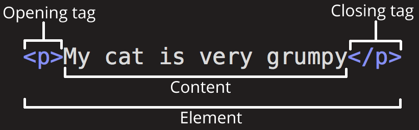
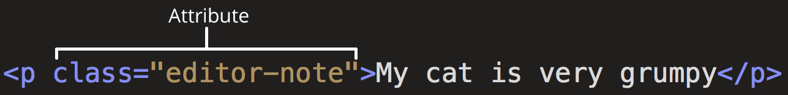
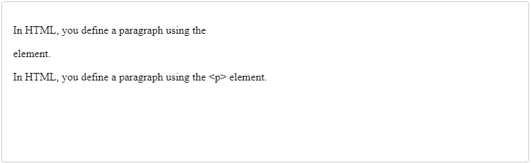

У цій статті ми охопимо ази HTML, потрібні для початку роботи. Дамо визначення «елементам»,
«атрибутам», «тегам» та іншим важливим поняттям, про які ви, можливо, чули, а також про їхню
роль у мові. Ми також покажемо, як влаштовані HTML-елементи, типова HTML-сторінка та
пояснимо інші важливі аспекти мови. По ходу сп рави, щоб ви не нудьгували, ми пограємося зі
справжньою HTML-сторінкою!
Що таке HTML?
HTML (HyperText Markup Language – мова гіпертекстової розмітки) не є мовою програмування – це
мова розмітки, яка використовується для визначення структури веб-сторінок, які відвідують
користувачі. Вони можуть мати складну чи просту структуру, все залежить від задуму та бажання
веб-розробника. HTML складається з ряду елементів, які ви використовуєте для того, щоб охопити,
обернути або розмітити різні частини вмісту, щоб він мав певний вигляд або спрацьовував певним
способом. Вбудовані теги можуть перетворити частину вмісту на гіперпосилання, за якою можна
перейти на іншу веб-сторінку, виділити курсивом слова і так далі. Наприклад, розглянемо
наступний рядок:
My cat is very grumpy
Якщо ми хочемо, щоб рядок відобразився в такому ж вигляді, ми можемо визначити його як
"параграф (paragraph)", уклавши його в теги елемента "параграф (paragraph)" ( <p>), наприклад:
<p>My cat is very grumpy</p>
Структура HTML-елементів
Давайте розглянемо елемент "параграф" трохи докладніше:

Основними частинами елемента є:
Відкриваючий тег – складається з назви (позначення) елемента (у нашому випадку p), поміщеного всередині кутових дужок. Цей тег є ознакою початку елемента, з цього моменту тег починає впливати на наступний після нього вміст.
Закриваючий тег – виглядає як і відкриваючий, але містить слеш (/) перед назвою тегу. Він є ознакою кінця елемента. Втрата закриваючих тегів – типова помилка новачків, яка може призвести до невизначених результатів – у кращому випадку все спрацює правильно, в інших сторінка може зовсім не промальовуватися або промальовуватися не як очікувалося.
Вміст – у нашому випадку вмістом є простий текст.
Елемент – відкриваючий тег, вміст, закриваючий тег.
Вкладені елементи
Ви також можете вкладати елементи всередину інших елементів – це називається вкладеністю.
Якщо ми хочемо підкреслити, що наш кіт дуже сердитий, ми можемо укласти слово "very" в
елемент <strong>, який означає, що це слово вкрай важливо в даному контексті:
<p>My cat is <strong>very</strong> grumpy.</p>
Ви повинні переконатися, що елементи вкладені належним чином: у наступному прикладі
відкриваємо p елемент першим, потім елемент strong, потім ми закриваємо елемент strong
першим, потім p. Нижче наведено приклад неправильного вкладення:
<p>My cat is <strong>very</p> grumpy.</strong>
Елементи мають відкриватися та закриватися правильно, таким чином, щоб явно перебувати
всередині чи зовні один одного. Якщо вони перекриваються так, як у прикладі вище, ваш браузер
спробує «додумати» за вас, що ви мали на увазі, і ви отримаєте непередбачуваний результат. Тож
не робіть так!
Порожні (void) елементи
Не всі елементи відповідають вищезгаданому шаблону: відкриваючий тег, контент, закриваючий
тег. Деякі елементи складаються з одного тегу і зазвичай використовуються для вставки чогось у
місце документа, де розміщені. Наприклад, елемент <img> вставляє картинку на сторінку в тому
самому місці, де він розташований:
У елементів можуть бути атрибути, які виглядають так:

Атрибути містять додаткову інформацію про елемент, яка не відображатиметься у вмісті. В даному
випадку атрибут class дозволяє дати елементу ідентифікаційне ім'я, яке надалі може бути
використане для звернення до елемента з метою додати стилеве оформлення.
Атрибут повинен мати:
Пробіл між атрибутом та ім'ям елемента (або попереднім атрибутом, якщо елемент уже має один або кілька атрибутів).
Ім'я атрибута та наступний за ним знак рівності.
Значення атрибута у подвійних "" або одинарних '' лапках.
Наприклад атрибути тегу <a>
href
У значенні цього атрибута прописується веб-адреса, на яку має вказувати посилання, куди браузер
переходить, під час кликання по ній. Наприклад, href="https://www.mozilla.org/".
title
Атрибут title містить текст, що надає інформацію щодо елемента. Ця інформація може, але не
обов'язково, показуватися користувачеві у вигляді підказки. Наприклад, title="The Mozilla
homepage" – з'явиться у вигляді підказки, коли ви наведете курсор на посилання.
target
Атрибут target визначає контекст перегляду, який використовуватиметься для відображення
посилання. Наприклад, target="_blank" відобразить посилання на новій вкладці. Якщо потрібно
відобразити посилання на поточній вкладці, просто опустіть цей атрибут.
Бульові атрибути
Іноді ви бачитимете атрибути, написані без значення — це цілком припустимо. Такі атрибути
називаються булеві, і вони можуть мати тільки одне значення, яке збігається з його ім'ям. Як
приклад візьмемо атрибут disabled, який можна призначити для формування елементів введення,
якщо ви хочете, щоб вони були відключені (неактивні), тому користувач не може вводити будь-які
дані в них.
<input type="text" disabled="disabled">
Для стислості цілком допустимо записувати їх в так(для розуміння наведено не деактивований
елемент input, щоб дати більше розуміння того, що відбувається):
<!-- using the disabled attribute prevents the end user from entering text into the input box -->
<input type="text" disabled />
<!-- text input is allowed, as it doesn't contain the disabled attribute -->
<input type="text" />
Опускання лапок навколо значень атрибутів
Якщо ви подивитесь на код багатьох інших сайтів, ви можете натрапити на низку дивних стилів
розмітки, зокрема значення атрибутів без лапок. Це дозволено за певних обставин, але також
може порушити вашу розмітку за інших обставин. Наприклад, якщо ми переглянемо наш
попередній приклад посилання, ми могли б написати базову версію лише з атрибутом href, як це:
<a href=https://www.mozilla.org/>favorite website</a>Копіювати в буфер обміну
Однак, як тільки ми додаємо атрибут title таким чином, виникають проблеми:
<a href=https://www.mozilla.org/ title=The Mozilla homepage>favorite website</a>
Браузер неправильно інтерпретує розмітку, сприймаючи атрибут title за три атрибути: атрибут title
зі значенням The та два логічні атрибути, Mozilla та homepage. Це призведе до помилок або
неочікуваної поведінки.
<a href=https://www.mozilla.org/ title=The Mozilla homepage>favorite website</a>
Структура HTML документа
Давайте подивимося, як елементи об’єднуються під час створення HTML сторінки:
Оголошення типу документа. Дуже давно, на початку розвитку HTML, тип документу
використовувався як посилання на набір правил, яким HTML-сторінка мала слідувати, щоб вона
вважалася правильною, що може означати автоматичну перевірку помилок та інші корисні речі.
Оголошення типу документа виглядало приблизно так:
<!DOCTYPE html PUBLIC "-//W3C//DTD XHTML 1.0 Transitional//EN"
"http://www.w3.org/TR/xhtml1/DTD/xhtml1-transitional.dtd">
Останнім часом тип документа є історичним артефактом, який необхідно включити, щоб решта
працювала правильно. <!DOCTYPE html> — це найкоротший рядок символів, який вважається
допустимим типом документа. Це все, що вам потрібно знати!
<html></html>
Елемент <html> містить весь вміст на всій сторінці, і іноді його називають "кореневий елемент".
<head></head>
Елемент <head> виступає як контейнер для елементів, що визначають метаінформацію документа
для роботів, браузерів і пошукових систем. Цей вміст не відображається користувачу, та включає
такі речі, як ключові слова та опис сторінки, які ви хотіли б показувати в пошукових запитах, CSS
для стилізування контенту, оголошення підтримуваного набору символів та багато іншого.
<meta charset="utf-8">
Цей елемент встановлює символьне кодування для вашого документа utf-8, який включає
більшість символів з усіх відомих людству мов. По суті тепер сторінка зможе відобразити будь-
який текстовий контент, який ви зможете в неї вкласти. Немає причин не встановлювати це
кодування, це також дозволить уникнути деяких проблем пізніше.
<title></title>
Елемент <title> встановлює заголовок сторінки, який з'являється у вкладці браузера, що
завантажує цю сторінку, також цей заголовок використовується при описі сторінки, коли сторінка
зберігається в закладках або вибраному.
<body></body>:
Елемент <body> містить весь контент, який будуть бачити відвідувачі сторінки: текст, зображення,
відео, ігри, аудіо, інше.
Пробіли в HTML
У наведених вище прикладах ви могли помітити, що код містить багато пробілів. Це
необов'язково. Ці два фрагменти коду еквівалентні:
<p>Cats are silly.</p>
<p>Cats are
silly.</p>
Незалежно від того, скільки пробілів ви використовуєте у вмісті елемента HTML (який може
включати один або кілька символів пробілу, а також розриви рядків), аналізатор HTML скорочує
кожну послідовність пробілів до одного пробілу під час відтворення коду. То навіщо
використовувати так багато пробілів? Відповідь - читабельність.
Зрозуміти, що відбувається у вашому коді, буде легше, якщо він добре відформатований. У
нашому HTML ми маємо кожен вкладений елемент із відступом на два пробіли більше, ніж той, у
якому він знаходиться. Ви вибираєте стиль форматування (наприклад, скільки пробілів для
кожного рівня відступу), але вам слід розглянути його форматування.
Спеціальні символи HTML (Entity)
У HTML символи <, >, & є спеціальними символами. Вони є частинами самого синтаксису HTML.
Отже, як включити один із цих спеціальних символів у свій текст? Наприклад, якщо ви хочете
використовувати амперсанд або знак менше, і не інтерпретувати його як код.
Ми повинні використовувати посилання-немоніки - спеціальні коди, які відображають
спецсимволи, і можуть бути використані у необхідних позиціях. Кожне посилання-немоник
починається з амперсанда (&) і завершується крапкою з комою (;).
Літерний символ
Символьний еквівалент
<
<
>
>
“
"
‘
'
&
&
У наступному прикладі ви бачите два абзаци:
<p>In HTML, you define a paragraph using the <p> element.</p>
<p>In HTML, you define a paragraph using the <p> element.</p>
Нижче ви можете помітити, що перший абзац виводиться неправильно, тому що браузер вважає,
що другий елемент <p> є початком нового абзацу! Другий абзац нашого коду виводиться
правильно, тому що ми замінили кутові дужки на посилання-немоніки.

HTML коментарі
HTML, як і в більшості мов програмування, є можливість писати коментарі в коді. Коментарі
ігноруються браузером та не видимі користувачеві, їх додають для того, щоб пояснити, як працює
написаний код, що роблять окремі його частини і т. д. Така практика корисна, якщо ви
повертаєтеся до коду, який давно не бачили або коли хочете передати його комусь іншому.
Щоб перетворити частину вмісту HTML-файлу на коментар, потрібно помістити її в спеціальні
маркери <!-- і -->, наприклад:
<p>I'm not inside a comment</p>
<!-- <p>I am!</p> -->
Як ви побачите нижче, перший параграф буде відображено на екрані, а другий ні.